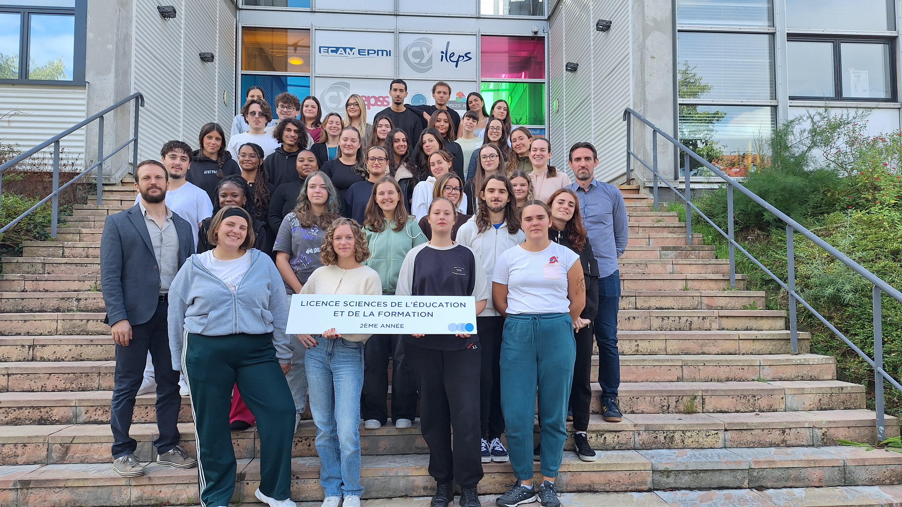

Après plusieurs réorientations, j’ai finalement trouvé ma voie : je poursuis aujourd’hui mes études en Sciences de l’Éducation à l’ILEPS de Cergy.
J’ai obtenu mon BAFA en 2019 et travaillé deux ans comme animatrice périscolaire et vacataire.
En parallèle, je travaille au McDonald’s, un emploi qui m’a appris la rigueur, la gestion du stress, la polyvalence et le travail d’équipe.